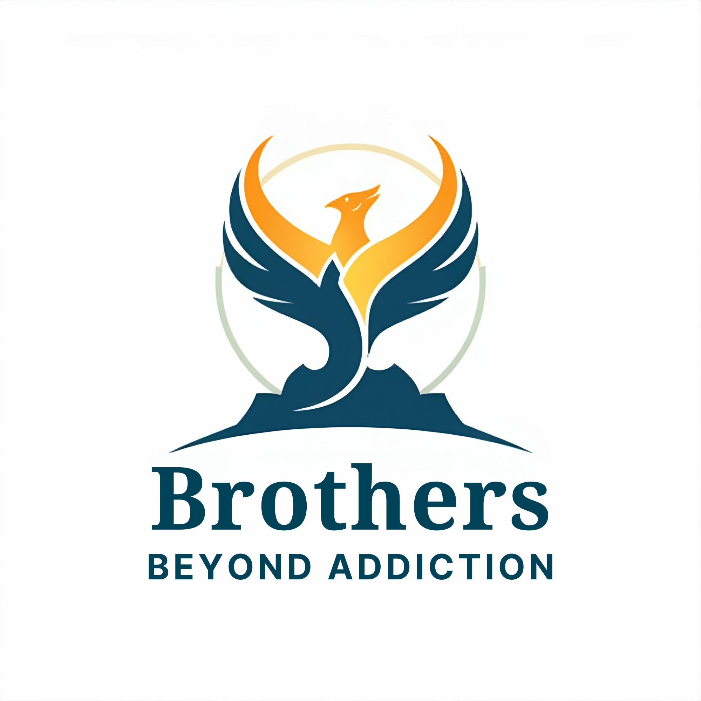

Gambling Addiction
Sports betting, online casinos, chasing losses, hiding debt, and the constant pull to place one more bet can isolate young men fast. We help members name the pattern and build a safer plan.

Brothers Beyond AddictionBrotherhood. Accountability. Momentum.
Brothers Beyond Addiction is a support community built for young men who are tired of hiding, chasing losses, vaping in silence, or trying to quit alone.
Start with one honest step
For the guys who say “I’m fine” when they are not.
For the ones ready to rebuild trust, discipline, and direction.
What We Support
Sports betting, online casinos, chasing losses, hiding debt, and the constant pull to place one more bet can isolate young men fast. We help members name the pattern and build a safer plan.
Vapes, cigarettes, pouches, and stress-triggered cravings can become a daily loop. We focus on accountability, trigger awareness, replacement habits, and staying connected when urges hit.
How We Help
Start with a real conversation, no shame and no performance. We listen, understand your goals, and help map next steps.
Meet with other young men who understand the pressure, secrecy, and setbacks that come with addiction.
Create clear routines for cravings, betting urges, spending controls, nicotine triggers, and moments of relapse risk.
When appropriate, we help families understand what support can look like without turning every conversation into conflict.
Our Approach
Recovery can feel overwhelming when every mistake becomes proof that change is impossible. Brothers Beyond Addiction creates a place where young men can be honest, take responsibility, and keep moving.
Take The First Step
Send a message and we will connect with you privately. If you are in immediate danger or thinking about harming yourself, call emergency services or a local crisis line now.